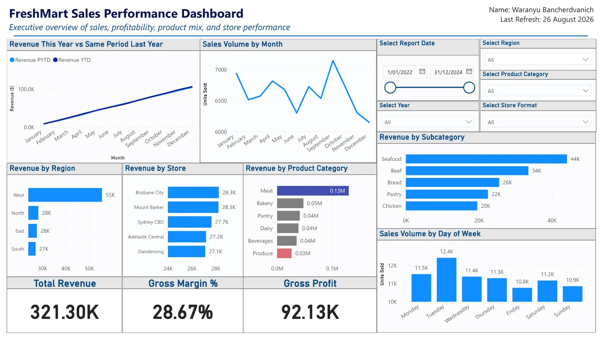

02 / AI model evaluation · Client capstone
Building and benchmarking a domain-specialist AI model
A consultancy for LocoLabo, a research lab at Curtin Business School. Its LocoLLM project runs a small AI model on an ordinary laptop, free and private, and adds plug-in “adapters” that make it an expert in one subject. Our team was asked to build the first real adapter and prove, with numbers, whether the idea works.
questions after training
sealed from training
across 13 principles
- Test 15 domains
- Seal the benchmark
- 615 training examples
- Train on a free GPU
- Score every run
- Hand over a recipe
The question
Out of the box, the base model is a generalist and weak on specialist questions. No adapter had ever been built on it, the training notebook no longer ran as it was, and nobody had proof that the idea works at this size. So the client’s question was: can a small, locally run model be trained into a genuine specialist that clearly beats the base model, and how do we prove it?
Choosing a domain with room to improve
The client let us pick the test subject, so we tested the untrained model first: 15 business domains, five questions each. Eleven scored five out of five, which leaves nothing to prove. Compliance and privacy law scored zero, with made-up supporting evidence, and its answers are easy to mark because there are 13 numbered principles. The client approved it as the project domain.
Read more
A follow-up test of 20 privacy scenarios scored 2, or 10%, close to the 8% you would get by picking one of the 13 principles at random. The model knew the law existed but scrambled the numbers, calling the security rule APP 13 when it is APP 11. In a larger 228-question test it scored 21%, and 79% of its answers cited foreign law such as GDPR.
A weak domain was a deliberate choice. If the base model is already good, a small gain could be luck. A big gap leaves a result everyone can see.
Building a fair test before any training
The benchmark came first and was sealed: never used for training. Both question sets were written from the OAIC’s APP Guidelines and the Privacy Act 1988, with the same mix of question types in each.
- Sealed benchmark: 170 questions: 130 with one right principle, 20 with several, and 20 trick questions where none applies
- Training set: 615 examples, about 35 per principle, including compliant cases so the model does not treat every story as a breach
- Checks: no overlap between the two sets, benchmark answers reviewed by our privacy-law expert and the client, and automated checks in Python
Read more
Every item uses the same question stem and the same four-part answer, so results can be scored automatically. One training example:
Question. My local florist wanted to charge me a fee just to take me off their mailing list. Which single Australian Privacy Principle, if any, is most directly relevant?
Answer. Category: violation. Applicable APP: APP 7 (direct marketing). Reasoning: opting out of direct marketing must be free of charge. Citation: OAIC APP Guidelines, chapter 7.
Automated word-overlap checks passed, but my manual review found 30 of my 105 training questions described the same situation as a benchmark question. I rewrote them, 37 changes in all, so the final score measures what the model learned rather than what it memorised.
Explore the results
We trained the adapter with LoRA fine-tuning on a free Google Colab GPU, about 15 minutes a run, and changed one setting per run so every jump has a cause. Each run was then scored on all 170 sealed questions. Pick a run to see what changed and what it did.
The team report scores the untrained model at 2% on one-principle questions. A like-for-like comparison, with the same model and prompt layout, gives 15%. Either way, the trained adapter is far ahead.
What the runs showed
-
01
Train more of the model. The client’s notebook trained only the attention layers. Adding the MLP layers, one line of settings, took one-principle accuracy from 38% to 81%: the biggest gain in the project.
-
02
Reasoning first, then the answer. Reordering each training answer so the model explains before it names the principle cut wrong “no principle applies” guesses from 54 to 5. Same data, new order.
-
03
It learns the format before the facts. Run 1 used the right answer layout 169 times out of 170 but named the right principle only 42 times. Score the answer, not the look.
-
04
Randomness is real. Run 2 repeated Run 1 with only a new random seed. The scores were almost the same (41 against 42 of 130), yet about one answer in five flipped. One score alone can be luck, so test at least twice and report a range.
-
05
It kept its general knowledge. The recommended adapter still answered 57 of 60 general maths, geography and instruction questions, so it learned privacy law without losing general ability.
What the client gets
Five deliverables, all in the shared repository: the privacy-law adapter, the sealed benchmark with its scoring script, the 615-example training set, a repaired Colab notebook that trains a new adapter in one click, and a report on each training run. The three recommended changes are free: no new data, no new hardware, the same 15-minute training.
The six-step recipe for the next domain
- Build and seal the test first, with single-answer, multi-answer and trick questions, and never train on it.
- Agree one answer format on day one: category, answer, reasoning, citation, with reasoning first.
- Write 35 to 50 examples per topic, including compliant cases.
- Score the base model fairly, with the same model and prompt layout.
- Start from the fixed notebook, then change one setting per run.
- Train twice with different seeds and report the range.
Followed in order, the next team can reach our best result in week one, not week six.
What the numbers can’t tell you
- Questions with several right answers are still weak, with an F1 score of about 0.65.
- Some answers still need a lawyer’s sign-off, such as tax file numbers, the Spam Act and employee records.
- Every benchmark question ends with the same wording. A 25-question probe with different wording scored 21 of 25, but it is a small test.
- One full benchmark run takes about two hours, so each recipe was tested only once or twice. Treat every number as a range.
What I did as Quality and Documentation Manager
- Wrote 105 training examples and 40 test questions, plus 30 trick items and the 25-question probe in different wording
- Ran the overlap review between the training set and the sealed benchmark, and rewrote the items that mirrored it
- Wrote the team’s documentation standard and template, and took the meeting minutes
- Drafted the final report’s structure, methodology and literature review, checking every source against the original paper
- Produced the training results reports, the 27-slide client presentation and the six-step handover recipe
Links
